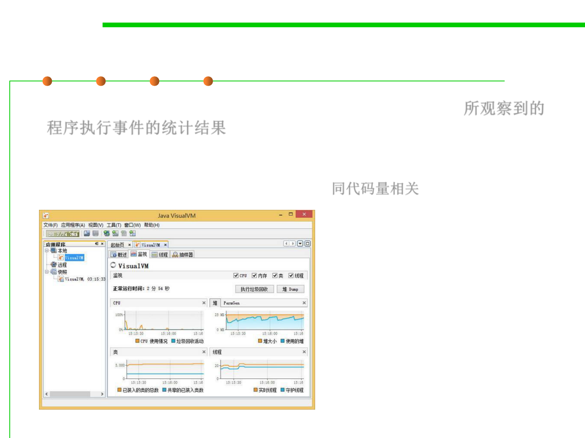

Outputs of Profiler
8.2 Dynamic Program Analysis Methods and Tools
▪ A statistical summary of the events observed (a profile) 所观察到的
程序执行事件的统计结果
– Summary profile information is often shown annotated against the source
code statements where the events occur, so the size of measurement data
is linear to the code size of the program. 同代码量相关
If (x==100)
x++;
else
x--;
0001
0001
0002